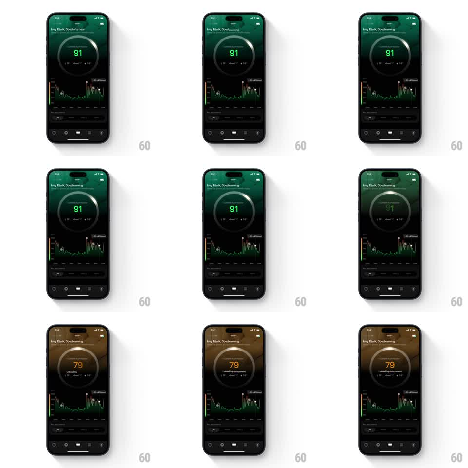

Media
Frame-by-frame

Rebuild this animation 1:1: Ultrahuman's environment score shift - the circular room score drains from a healthy green 91 to an amber 79, and the whole screen's ambient tint follows the ring's color.

Rebuild this animation 1:1: Ultrahuman's environment score shift - the circular room score drains from a healthy green 91 to an amber 79, and the whole screen's ambient tint follows the ring's color. ## Integration Integration: stack-agnostic spec - springs given as stiffness/damping, timed motions as duration + curve; map every value to your framework and animation library of choice. ## Scene Dark environment screen: greeting header, large circular score ring with number and status labels, a CO2 line chart below, tab bar at the bottom. ## Motion spec Pattern: color-state ring transition, ~1.2s. - The number counts down 91 -> 79 (900ms, ease-in-out) while the ring's lit arc retracts in lockstep. - The ring's color sweeps green -> amber around its circumference, following the arc's head (gradient morph over the same 900ms). - The screen's ambient background tint (radial glow behind the ring) crossfades from deep green to burnt amber (1s) - the room itself feels different. - The status label swaps to "Unhealthy environment" (150ms crossfade) as the count settles; the chart line and accents shift to the amber palette together. - Tab bar and greeting stay constant. ## Calibration - Number, arc, and color are one timeline; desync between count and color reads as two competing truths. - The background tint moves with the ring, never ahead of it. ## Reduced motion Crossfade the ring and tint between the two states (300ms); number swaps directly. ## Don't miss - The arc retracts as the score drops - dropping the number while the ring stays full contradicts the data. - Amber, not red: this is a warning state, and red would misread as alarm.